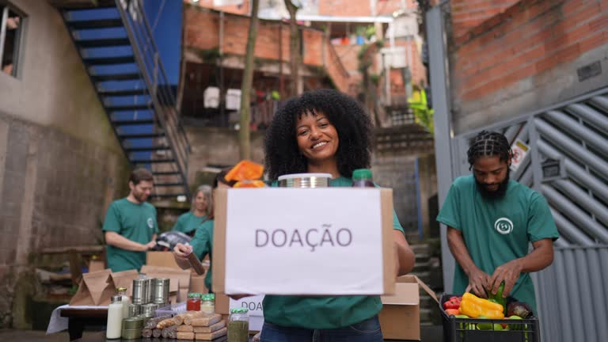

Dignidade na mesa para quem mais precisa no DF
A Laços do Bem é uma organização sem fins lucrativos que nasceu do desejo de transformar empatia em ação. Nossa missão é combater a fome e garantir a segurança alimentar de pessoas e famílias em situação de vulnerabilidade nas cidades satélites do Distrito Federal.
Acreditamos que o acesso à alimentação é um direito fundamental e o primeiro passo para reconstruir a dignidade. Cada cesta entregue representa mais do que comida na mesa — é um gesto de esperança, cuidado e solidariedade com quem enfrenta dias difíceis. Nosso compromisso é levar o básico para quem mais precisa, com amor e respeito.
